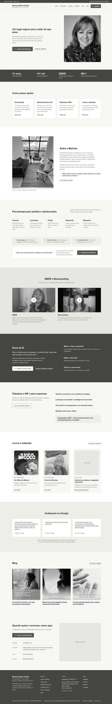

Ideia 1Disponível para avaliar
Acolhimento sereno
Inspirada em drgabormate.com
Uma página clara e acolhedora, que apresenta a Marínea, organiza os serviços e conduz com calma até o agendamento.
- Abertura com foto, frase de cuidado e botão do WhatsApp.
- Quatro portas de entrada: psicoterapia, mentoria, empresas e livros.
- Faixa com 31 anos, horas de atendimento e métodos.
- Avaliações do Google em destaque, para você decidir se mantém.